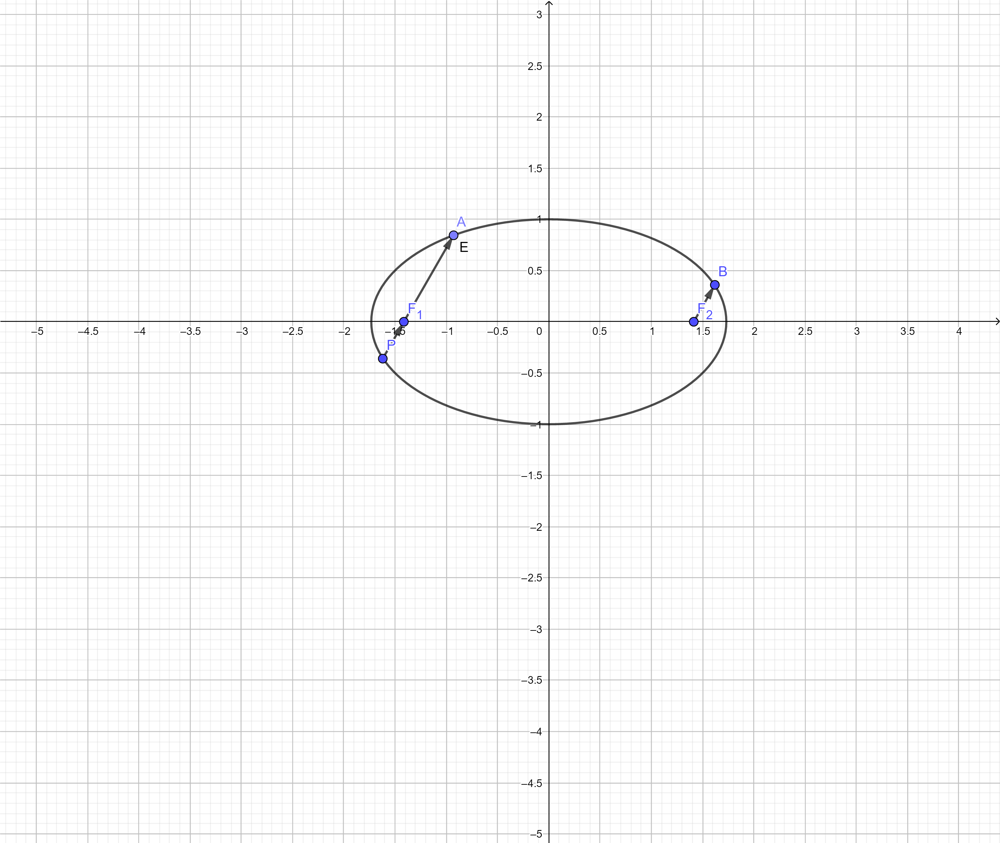

题干
题图如上，以下是题干：
$F_1,F_2分别为椭圆\frac{x^2}{3}+y^2=1的左右焦点，点A,B在椭圆上$
$若\vec{F_1A}=5\vec{F_2B}，求F_1A的斜率$
巧解
$很显然\vec{PF_1}=\vec{F_2B}$
$设\vec{F_1A}与x轴正方向夹角为\alpha$
$以F_1为极点，F_1x为极轴建立极坐标系，得椭圆极坐标方程:$
$\rho=\frac{ep}{1-ecos\theta},p=\frac{b^2}{c}$
$则:$
$|\vec{F_1A}|=\frac{ep}{1-ecos\alpha}$
$|\vec{PF_1}|=\frac{ep}{1+ecos\alpha}$
$令\frac{ep}{1-ecos\alpha}=5\frac{ep}{1+ecos\alpha}解得:$
$cos\alpha=\frac{\sqrt{2}}{\sqrt{3}},则k=tan\alpha=\frac{\sqrt{2}}{2}$
$考虑到关于x轴对称的情况，k=\pm\frac{\sqrt{2}}{2}即为所求$
硬解(一般解法)
$设A(x_1,y_1),P(x_2,y_2),AP:x=my-\sqrt{2}$
$与椭圆方程联立，得:$
$(m^2+3)y^2-2\sqrt{2}my-1=0$
$根据韦达定理可得:$
$y_1+y_2=\frac{2\sqrt{2}m}{m^2+3}(1)$
$y_1y_2=\frac{-1}{m^2+3}(2)$
$由\vec{F_1A}=5\vec{PF_1}可得:y_1=-5y_2(3)$
$联立以上1,2,3式(不好算)可得:$
$y_1=\frac{5m}{\sqrt{2}(m^2+3)}$
$y_2=\frac{-m}{\sqrt{2}(m^2+3)}$
$进一步得到:\frac{5m^2}{2(m^2+3)}=1$
$解得:m=\pm\sqrt{2},k=\frac{1}{m}=\pm\frac{\sqrt{2}}{2}即为所求$
总结
我们知道在平面直角坐标系中确定一个点需要用到两个坐标，而在极坐标系中确定一个点需要这个点到极点的距离和这个点到极点连线与极轴的夹角两个参数，极坐标系”角度与距离的关系”这个性质正好给予了我们一种用角度确定圆锥曲线焦半径的途径。
虽然这个方法不是万能的，但是凡是遇到焦半径有关的问题不妨都考虑一下极坐标方程，也许会有很大的收获。